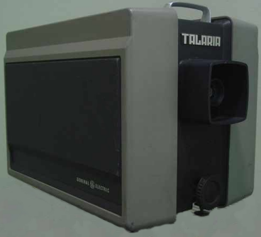

GE Talaria Light-Valve Video Projector
A full video image sculpted by electrons into a spinning film of oil, read by light bent into a shadow

Overview
The GE Talaria is a video projector with no picture tube and no pixels. Inside, a rotating glass disc is continuously re-coated with a thin film of viscous oil. A conventional electron beam — the same kind that writes a raster in a CRT — sweeps a picture across this oil surface, physically deforming it into a diffraction grating. Light from a high-intensity Xenon arc lamp passes through the oil; where the electron beam has carved a grating, light is diffracted and imaged through Schlieren optics onto the screen; where the oil is undisturbed, light falls into a light trap and the screen is black. Color is added by splitting the light into red, green, and blue channels with dichroic filters, each writing its own oil film. The result is a bright, big-screen video image made literally from sculpted oil.
Deep dive
The Talaria grew out of General Electric's 'light valve' work begun around 1959, documented in primary archives (Holeman 1960, Newberry 1961 electron-optics paper, Glenn 1964 color paper). The commercial projector, introduced in 1983, became a mainstay of large-venue and rear-projection display; Popular Mechanics covered it in April 1983. Its defining physical detail is that the picture is not emitted — it is carved. The electron beam 'draws' the raster into oil, and that carved surface, rather than a light-emitting panel, is what forms the image.
The Talaria is a reminder that the late analog era produced output displays whose physical principles were wildly diverse. A video image could be a scanned phosphor beam, a gas discharge, a spinning mirror, or — here — a diffraction grating in oil. The oil-film light valve is one of the strangest output mechanisms ever commercialized, and it has no near neighbor anywhere in the museum.
Team & pioneers
- General Electric. Project Talaria development; commercial product 1983.